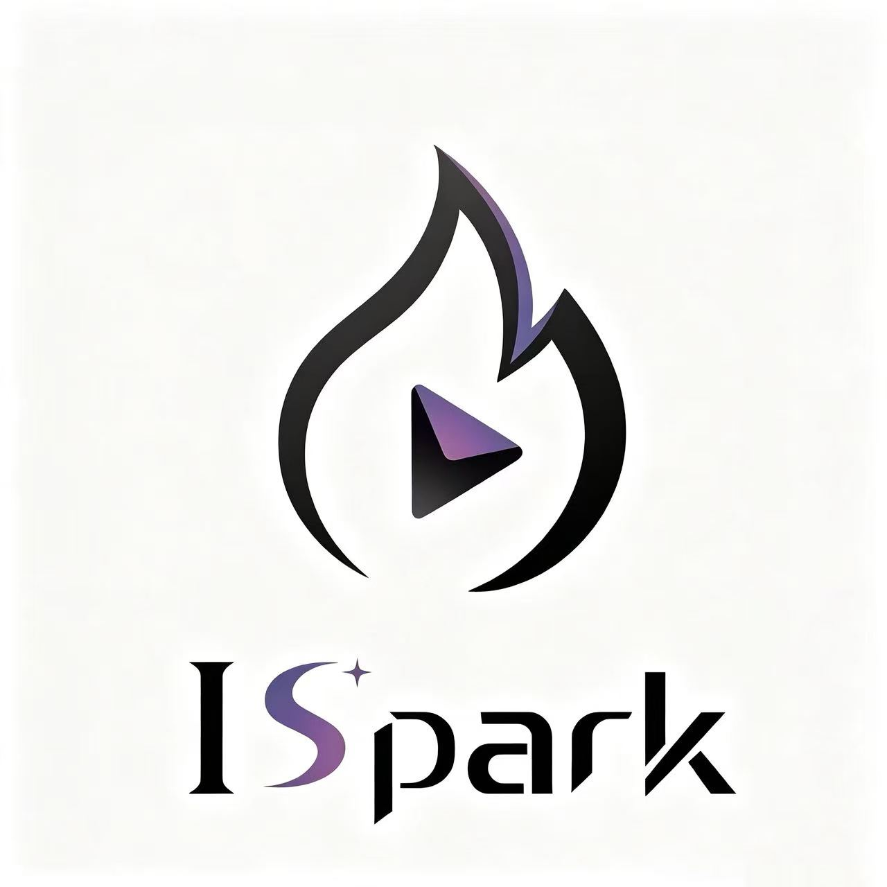
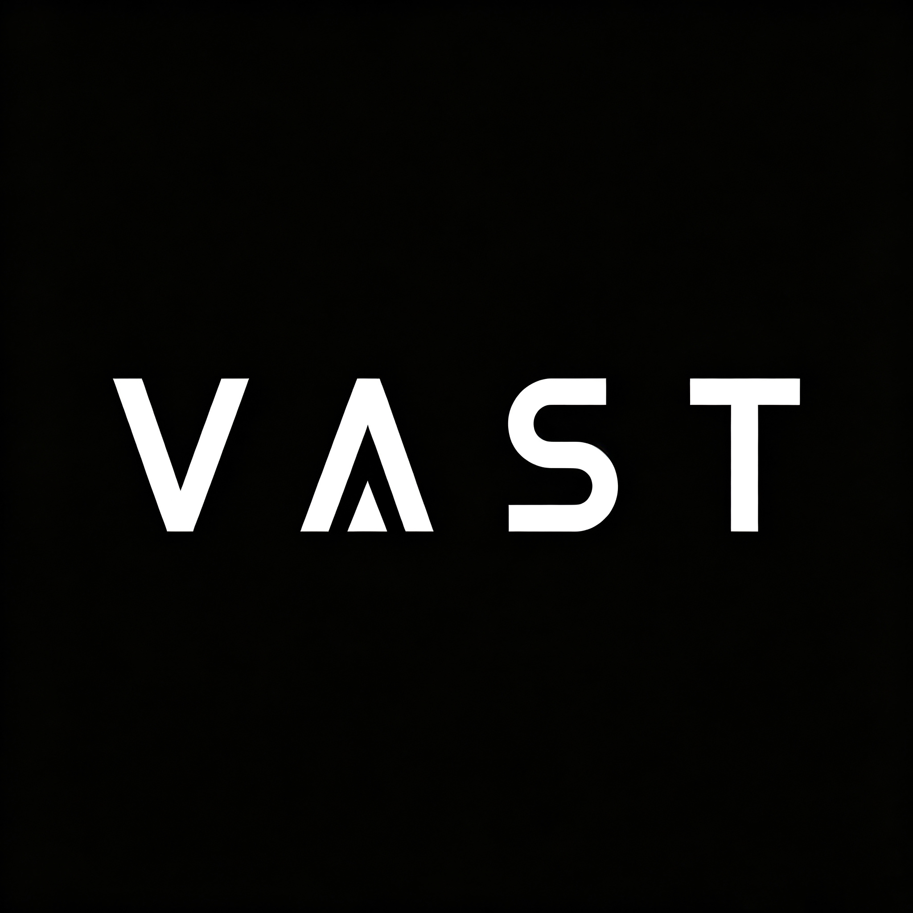
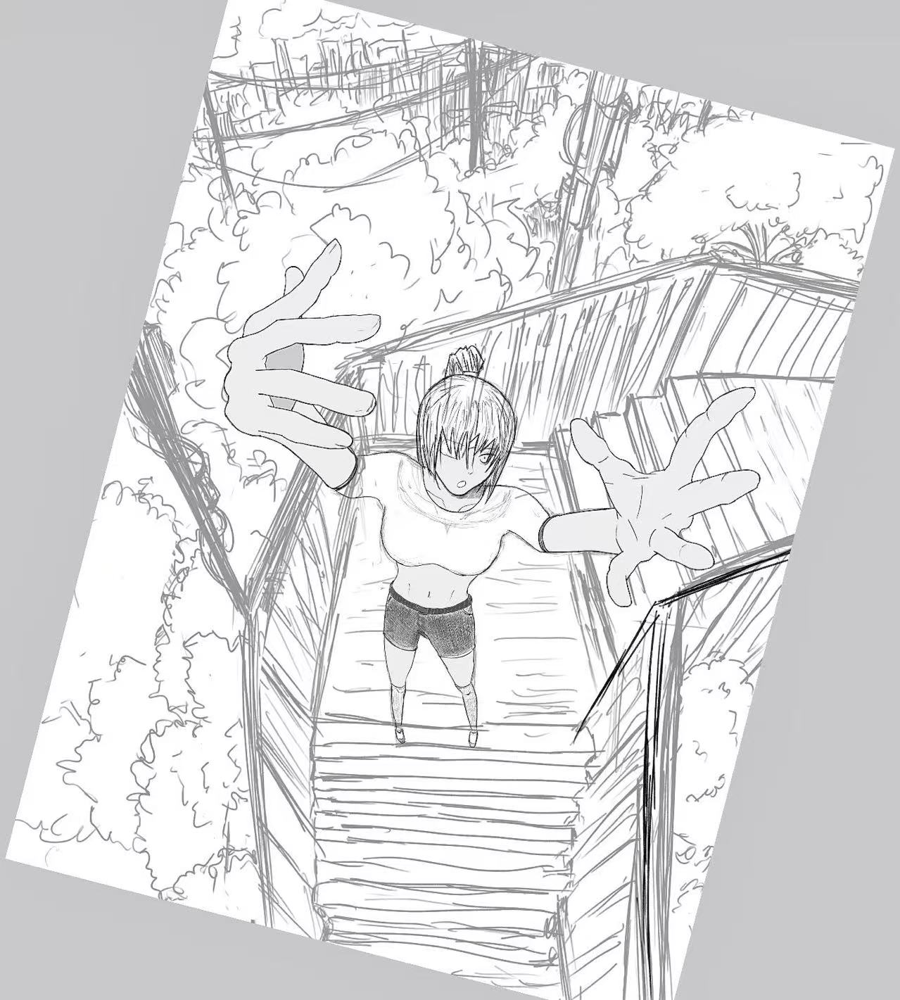

业务理解能力强，精准匹配岗位与候选人画像。
石光祖
HR · AI Native
关于我
石光祖
我是一名郑州大学工商管理专业的学生，专注 AI 行业技术招聘，兼备互联网大厂与 AI 独角兽实习经验，坚持结果导向与自我突破。目前我正在对 AI Agent 使用抱有浓厚兴趣，并持续学习中，欢迎你和我交流分享经验！
下载简历自我评价
一些关于我的关键词
结果导向，数据意识，数据复盘持续优化招聘。
AI 爱好者，持续学习利用 AI 工具提升工作效率。
细致抗压，期望未来深耕 AI 行业人力资源领域。
实践探索
我的探索与积累
AI 工具应用实践 把 AI、Agent 和自动化能力落到招聘场景里 4 项
多语言本地化口语测评 Bot
面向海外本地化招聘的语音测评 Bot，可复用于多语言场景，解决小语种面试官缺失问题。
Codex-Doubao 编排式简历评估与录入 Skill
Codex 负责简历评估、分级和报告生成，豆包负责读取简历并录入招聘台账，通过编排协作提升筛选与录入效率。
3D Mapping Skill
通过 Google Scholar、LinkedIn、GitHub 等公开渠道，寻找具有 3D 生成、动态 3D、4D 和世界模型经验的高年级博士候选人。
全岗位面试资料库（在建）
纯演示 Demo，旨在建设全类型岗位的面试资料，涵盖常见问题优秀解答、风险点，以及各大厂岗位 JD 解析。
招聘方法论 把招聘工作沉淀成可复用的方法和流程 1 项
HR实习生 · 通用工作SOP
经过长期的实习实践，沉淀招聘实习中的工作方法论，覆盖 Sourcing、简历推送、面试跟进、Offer 沟通和入职跟进等环节。
招聘数据与流程 用数据复盘招聘链路，定位流程中的转化问题 1 项
招聘漏斗分析
Skill Agent 驱动的招聘数据分析工具，梳理 30+ 岗位招聘链路，识别流失症结，输出可视化归因看板。
演示暂不公开
下载 Skill
教育背景
学习经历
郑州大学（211）
本科 · 工商管理
人力资源管理（90）
组织行为学（85）
管理学原理（88）
市场营销（88）
概率论与数理统计（87）
211 高校工商管理专业，系统学习人力资源管理、组织行为学等核心课程，理论基础扎实。
实习 / 工作经历
我一直在路上

ISpark（视频交互式生成世界模型新锐团队）
HRBP
用视频渲染世界。- 除基础招聘工作外，还将参与组织架构设计、绩效管理体系搭建、团队活动筹建等 HR 全模块工作。
- 热爱并期待探索未知领域，在世界模型赛道持续学习与成长。

VAST（3D 世界模型 AI 独角兽）
HR 实习生
Make high-quality spatial creation accessible to everyone.- 对接增长业务社招和实习共 30 个岗位（实习岗位独立负责 14 个，社招岗位协助 mentor 16 个），覆盖设计、策略优化、投放执行、增长工程等业务，招聘工作全流程跟进（沟通 offer 阶段除外）。
- 8 月份共推送简历 204 份，评估通过 166 份，通过率 81.4%。其中社招 92 份，通过 62 份（67.4%）；实习 112 份，通过 104 份（93.0%）。主要渠道：脉脉、BOSS 直聘、小红书、3D 创作者社区（如 tripo、meshy 等）。
- 截至目前，通过自主 Sourcing 产出 offer 14 份并全部接受（社招 3 人、实习 11 人），其中 8 人已入职，6 人待入职；含 4 位高分候选人（面评均分 4.0/5.0 以上），8 月高分候选人数位列组内第1名。
- 正在提升 AI 工作流搭建能力：
- （1）使用 Agent 搭建招聘数据漏斗，利用 AI 总结各环节卡点及流失原因，优化各环节招聘思路与策略，有效减少各环节阶段流失。
- （2）搭建语音交互式 bot 进行对候选人的小语种本土化口语测试，最终获得业务参考。
- 搭建并持续更新社招、实习招聘台账与工作日志，实时同步各环节候选人状态；基于招聘漏斗指标（简历初筛通过率、一面到场率、面试通过率、offer 接受率、入职转化率）开展周会复盘，精准定位各环节转化卡点，持续迭代寻访策略与面试对接流程，提升招聘信息流转效率。
快手 · 可灵 AI
HR 实习生
开放，进化。- 对接多模态理解与生成一体化算法岗，负责实习生 HR 面试。
- 校招 + 实习推送简历 200+，通过率 70% 以上；组织面试 323 场；发送 offer 16 人，接受 offer 12 人。
- 在 Google Scholar、OpenReview、AMiner、脉脉等渠道开源并进行竞家 Mapping，协助转化落地面试。
- 跨业务支持 AI Infra、AI Agent、具身智能、大模型数据策略等方向。
- 负责校招竞家薪酬方案收集、候选人入职信息录入与流程跟进。
高途 · 市场部
社群运营
- 学员社群日常运营，维护群内氛围，提升用户粘性与活跃度。
- 用户需求收集与反馈汇总，用于提高转化率。
校园经历
初步的尝试
全国大学生创新创业训练计划（大创赛）
角色：研究成员
- 参与文献梳理与理论研究，构建社区食堂可持续发展评价指标体系。
- 协助在郑州多地开展调研、问卷与访谈数据收集，完成数据统计分析。
- 参与案例研究、问题总结及论文撰写，提出可持续发展实现路径。
专业技能
我的工具箱
工作能力
招聘全流程绩效管理基础组织与人才发展基础思维与成长
数据思维复盘意识自我方法论沉淀AI 能力
Vibe Coding 进阶中荣誉奖励
一点点认可
兴趣爱好
生活里的光
摄影作品
绘画作品
